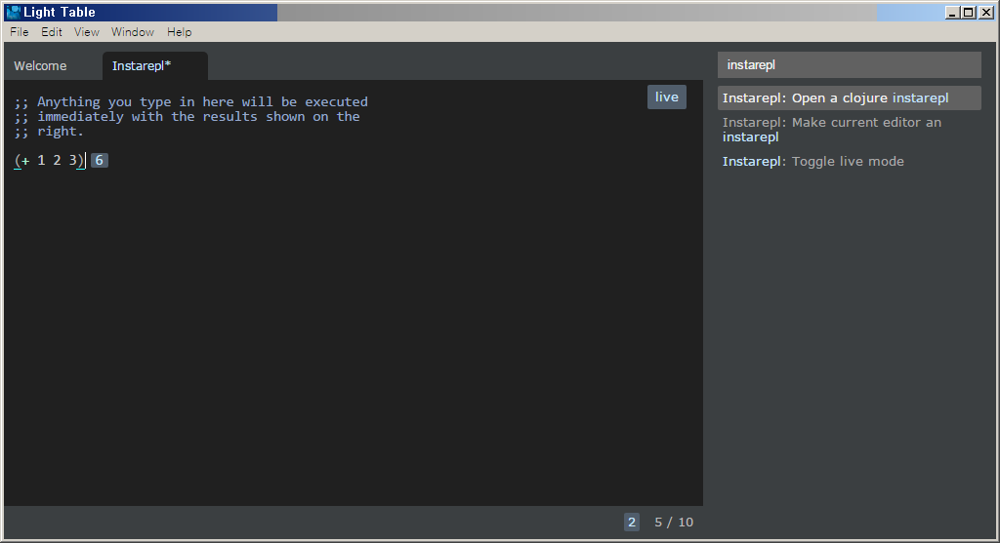
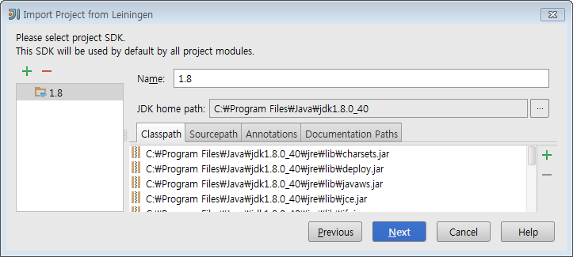
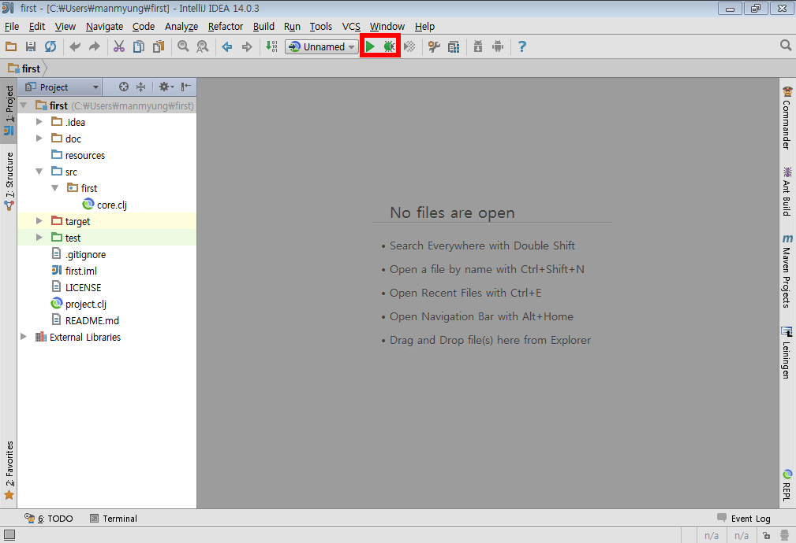
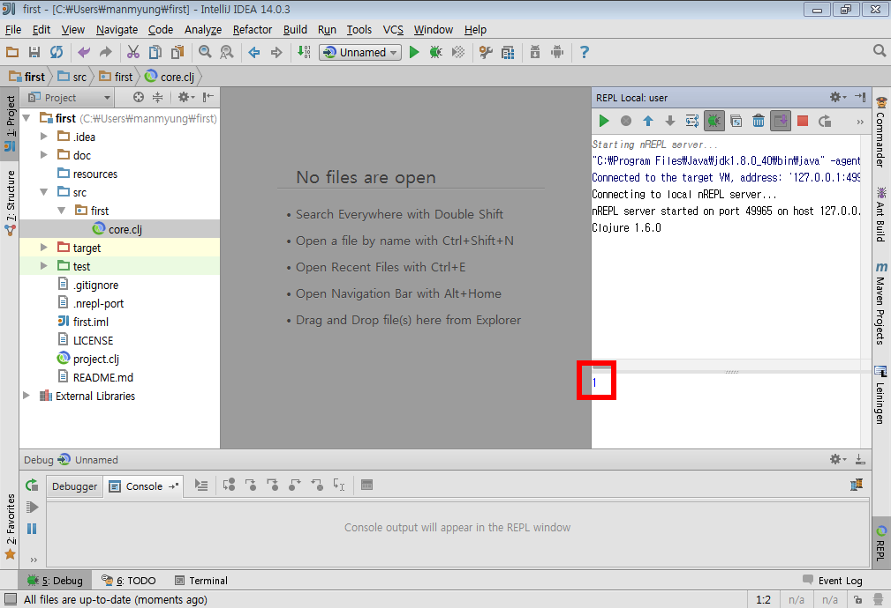
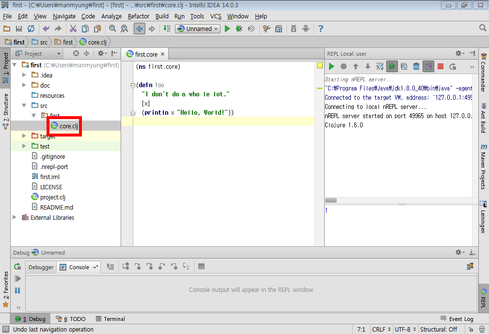
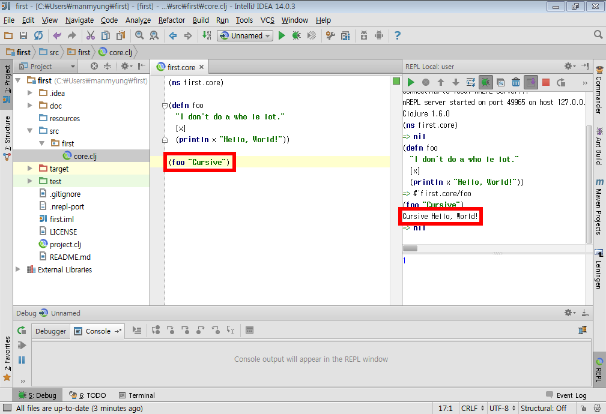

이 장에서는 Windows 7 (64비트 버전)에 클로저 개발 환경을 설치하는 예를 보여준다. 다른
OS의 경우에는 이 장의 내용을 참고해서 약간 변용하면 설치가 가능할 것이다.
1. Java JDK의 설치
-
클로저는 JVM(Java Virtual Machine) 상에서 실행되는 언어이므로, 먼저 JDK(Java Development Kit)를 설치해야 한다. 클로저는 JDK 1.6.0 이상의 버전에서 돌아가지만, 특별한 요구 사항이 없다면 최신 버전의 JDK를 설치하도록 한다.
-
http://www.oracle.com/technetwork/java/javase/downloads/index.html를 방문해 'JDK DOWNLOAD' 버튼을 클릭한 후, 자신의 OS에 맞는 최신 버전의 JDK을 내려 받는다. 여기에서는
Windows 7(64비트 버전) 상에서 JDK를 설치하는 예를 보이겠다. 따라서 Java SE Development Kit 중에서 Windows x64 버전의 jdk-8u66-windows-x64.exe 파일을 다운로드 받는다.CautionJRE(Java Runtime Environment)가 아니라 JDK를 다운로드 받아야 한다. -
내려 받은 파일을 실행해, JDK 설치를 시작한다. 기본 설정 값대로 진행해 설치를 마친다.
-
다음과 같이 실행해 메시지가 출력되면 Java SE JDK 버전 설치에 성공한 것이다.
C:\> java -version java version "1.8.0_66" Java(TM) SE Runtime Environment (build 1.7.0_07-b18) Java HotSpot(TM) 64-Bit Server VM (build 25.66-b18, mixed mode)
2. wget 설치
클로저 프로젝트 관리 도구인 Leiningen이 라이브러리를 내려받을 때 wget 프로그램을 필요로 하므로, 이 프로그램을 미리 설치해 두어야 한다.
-
https://eternallybored.org/misc/wget을 방문해, 64비트 버전인 wget-1.17-win64.zip 파일을 다운로드 받는다. 자신의 Windows가 32비트 버전이면 wget-1.17-win32.zip 파일을 다운로드 받는다.
-
압축을 푼 후에, wget.exe 파일 을자신이 원하는 폴더로 복사한다. 여기에서는
C:\util\Gnuwin32\폴더에 복사하는 것으로 한다. -
환경 변수 PATH에 wget.exe 파일이 위치한 폴더의 경로를 추가한다: (Windows 환경 변수 설정하기 참고)
[시스템 변수]에서 PATH 변수 선택 후, [편집] 누른 후에, [변수 값]에C:\util\Gnuwin32\bin경로를 추가한다.
3. Leiningen 설치
Leiningen(라이닝언)은 클로저 프로젝트 관리를 위한 기본 도구이다.
-
다음과 같이 wget을 이용해 leiningen을 다운로드한다. 여기서는 leiningen을 C:\leiningen\ 폴더 아래에 설치하는 것으로 한다.
C:\leiningen> wget --no-check-certificate https://raw.githubusercontent.com/technomancy/leiningen/stable/bin/lein.bat
-
환경 변수 PATH에, lein.bat을 포함하고 있는 폴더의 경로(C:\leiningen\bin)를 추가한다.
[시스템 변수]에서 PATH 변수 선택 후, [편집] 누른 후에, [변수 값]에 C:\leiningen\bin 경로를 추가한다. -
환경 변수 LEIN_HOME을 새로 만들고, lein.bat을 포함하고 있는 폴더의 경로를 입력한다.
[시스템 변수 → 새로 만들기] 선택 후, [변수 이름] 란에 LEIN_HOME으로, [변수 값] 란에는 C:\leiningen\bin을 입력한다. -
이후 아무 폴더에나 들어가서 명령창을 연 후, 다음과 같이 입력해 leiningen 본체를 설치한다.
> lein self-install
위 명령이 실행된 후에, LEIN_HOME에 지정되어 있는 폴더에 self-installs 폴더가 생성되고 그 아래에 leiningen-2.5.3-SNAPSHOT-standalone.jar가 설치된 것을 확인할 수 있다.
C:\leiningen\bin> tree /a /f C:. | lein.bat \---self-installs leiningen-2.5.3-SNAPSHOT-standalone.jar다음과 같이 입력해 메시지가 출력되면, Leiningen이 제대로 설지된 것이다.
> lein version Leiningen 2.5.3 on Java 1.8.0_66 Java HotSpot(TM) 64-bit Server VM
4. IDE 설치
클로저 프로그래밍을 위한 IDE(Intergrated Development Environment)는 여러가지가 있는데, 초보자가 사용하기 편한 순서로 소개하겠다.
4.1. Light Table
Light Table은 클로저스크립트로 작성된 에디터로, 비교적 최근에 등장해 에디터로서의 성숙도는 부족하지만, 클로저 프로그래밍을 쉽게 해줄 수 있는 환경을 제공한다.
-
http://lighttable.com 사이트를 방문해 자신의 OS에 맞는 Light Table을 다운로드 받는다. 여기서는 lighttable-0.8.0-alpha-windows.zip 파일을 다운로드 받는 것으로 한다.
-
다운로드 받은 파일의 압축을 푼 후에, 자신이 원하는 폴더로 통쨰로 복사한다.
-
폴더 내의 LightTable.exe 파일을 더블클릭하면 Light Table이 실행된다.
-
Light Table이 실행된 후, [View - Commands] 메뉴를 선택한 후, 입력창에 `instarepl`을 입력한다. 이떄 아래에 나열된 명령어 목록들 중에서, `Instarepl: Open a clojure instarepl`을 선택하면 REPL이 뜬다.
-
다음과 같은 화면이 뜨면 instarepl이 정상적으로 실행된 것이다.

4.2. IntelliJ
IntelliJ에 Cursive 플러그인을 추가하면 소스 브라우징, 리팩토링, 디버깅 등을 디폴트로 이용할 수 있어 편리하다.
4.2.1. IntelliJ 설치
https://www.jetbrains.com/idea/download/ 에서 Community Edition을 다운받아 설치.
4.2.2. Cursive 플러그인 추가
-
https://cursiveclojure.com/userguide/ 의 Manually installing Cursive 항목에서 IntelliJ 버전에 맞춘 zip파일 다운받는다. 지금은 https://cursiveclojure.com/cursive-14-0.1.50.zip 를 받았다. Repositories로 설치하는 방법은 이 포스트를 작성하는 시점에는 작동하지 않았다.
-
IntelliJ를 실행하여 Configure, Plugins를 선택.

-
Install Plugin from disk… 로 다운받은 zip 파일 선택하여 설치.
4.2.3. 프로젝트 가져오기
-
콘솔창에서
lein new default first로 새 프로젝트를 만든다. IntelliJ는 프로젝트 단위로 관리되므로 클로저 파일 하나만으로는 실행이 불가능하다. -
Import Project를 선택한 후, first 디렉토리의 project.clj를 선택한다.

-
계속 Next를 눌러 Import한다. 중간에 project SDK를 선택하는 곳에서 자신의 JDK를 선택한다. 만약 컴퓨터에 JDK가 없으면 설치해야 한다.

4.2.4. 환경 세팅
-
오른쪽 아래
Structural: On클릭하여Structural: Off로 바꾼다. On 으로 되어 있으면 소스 편집이 불편하다.

-
View에서 Toolbar와 Tool Buttons를 선택하여 모두 보이도록 한다.
-
Run→Edit Configurations… 선택. 왼쪽 위 + 버튼 누른다. Clojure REPL → Local 선택한다. OK 버튼 눌러 Clojure REPL 만든다. 그러면 다음처럼 실행할 수 있는 버튼이 생긴다.
 -
REPL에 단축키가 설정되어 있어야 편리하다.
-
Setting→Appearance & Behavior→KeyMap을 연다.
-
search box에 REPL을 쳐서 넣는다.
-
Load file in REPL에Alt + L(맥은Command + L) 단축키 세팅한다. -
Run form before cursor in REPL에Alt + J(맥은Command + J) 단축키 세팅한다. -
Run top form in REPL에Alt + K(맥은Command + K) 단축키 세팅한다.

-
4.2.5. 실행
-
벌레모양의 Debug 버튼 눌러 REPL 실행한다.
-
REPL 입력창에 1 치고 Enter를 눌러 REPL이 작동함을 확인한다.
 -
프로젝트 창에서 core.clj를 선택하여 연다.
 -
(ns first.core)뒤로 커서를 옮긴 후Alt + J(맥은Command + J)를 눌러 평가한다.(defn foo …)뒤로 커서를 옮긴 후Alt + J(맥은Command + J)를 눌러 평가한다.

-
(foo "Cursive")`를 친 후 `Alt + J(맥은Command + J)를 눌러 평가한다. 그러면 REPL 창에 `Cursive Hello, World!`가 찍히는 것을 확인한다.

4.2.6. 추가 환경 세팅
필수는 아니지만 해두면 편리한 것들.
-
Tab키를 누를 때 indent가 자동으로 된다. 이를 위해서는 https://cursiveclojure.com/userguide/ 의 내용대로 따라한다.
-
Settings→Appearance & Behavior→KeyMap을 연다.
-
search box에 tab을 쳐서 넣는다. 그러면
Tab`과 `Emacs Tab옵션이 나온다. -
`Tab`을 더블클릭한 후 Remove Tab을 선택한다.
-
`Emacs Tab`을 더블클릭한 후 Add Keyboard Shortcut을 선택한다.
-
Tab키를 눌러 First Stroke에 Tab이 세팅되도록 한 후 OK를 누른다.
-
Warning 창이 나오면 Leave를 선택한다.
-